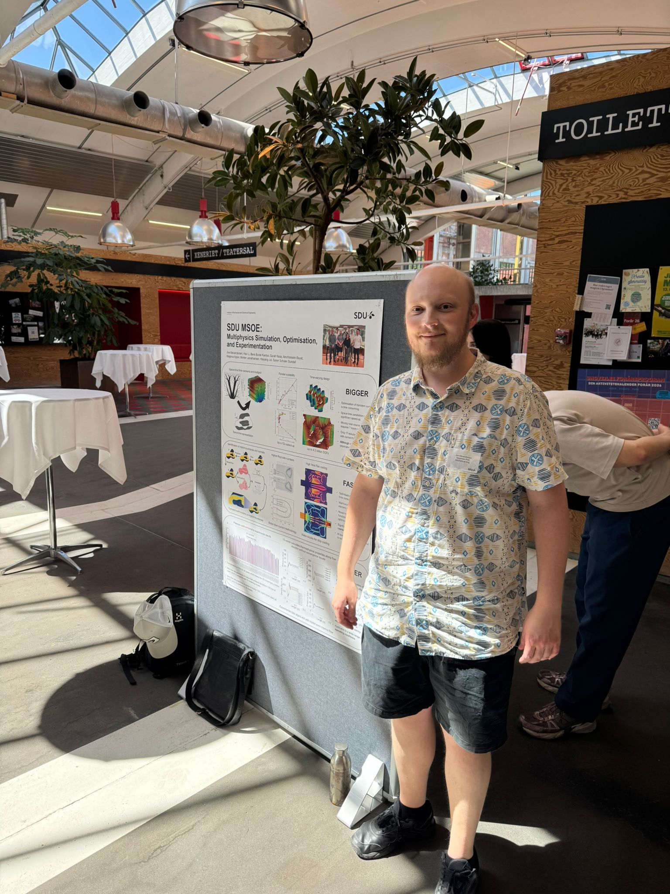

Phone:
+45 6550 7465
Email:
joal@sdu.dk
Institute of Mechanical and Electrical Engineering
University of Southern Denmark
Campusvej 55, DK-5230 Odense M
About Me
Joe Alexandersen is an Associate Professor at the University of Southern Denmark specialising in numerical modelling, parallel programming, high-performance computing, and structural design optimisation of multiphysics applications. His work spans solid mechanics, fluid mechanics, and heat transfer — and their interactions.
He leads the MSOE (Multiphysics Simulation, Optimisation and Experimentation) research group at SDU, which he founded in August 2019. He is a member of the Section of Mechanical Engineering at the Institute of Mechanical and Electrical Engineering, University of Southern Denmark.
Research Interests
- Structural optimisation (shape and topology)
- Density-based topology optimisation
- Gradient-based constrained optimisation methods
- Sensitivity analysis
- Finite element and multiscale methods
- Conjugate heat transfer and passive cooling
- Fluid dynamics and microfluidic devices
- Fluid–structure interaction
- Parallel programming and large-scale computations
- Space-time methods for time-dependent problems
Career
| 2022–present | Associate Professor, Institute of Mechanical and Electrical Engineering, University of Southern Denmark |
| 2019–2022 | Assistant Professor, Institute of Mechanical and Electrical Engineering, University of Southern Denmark |
| 2016–2019 | Postdoctoral Researcher, Department of Mechanical Engineering, Technical University of Denmark |
| 2013–2016 | Ph.D. Student, Department of Mechanical Engineering, Technical University of Denmark |
Education
| 2013–2016 |
Ph.D., Technical University of Denmark "Efficient topology optimisation of multiscale and multiphysics problems" |
| 2011–2013 |
M.Sc., Technical University of Denmark Engineering Design and Applied Mechanics (Honours student) |
| 2007–2011 |
B.Eng., Technical University of Denmark Mechanical Engineering |
Awards & Recognition
| 2022 | Fluids 2020 Best Paper Award |
| 2017 | DTU Young Researcher Award |
| 2015 | ISSMO/Springer Prize for Young Scientists |
Grants
| 2023 | DFF Sapere Aude Research Leader (Independent Research Fund Denmark) |
| 2023 | MSCA-PF co-applicant and host (Marie Skłodowska-Curie Postdoctoral Fellowship) |